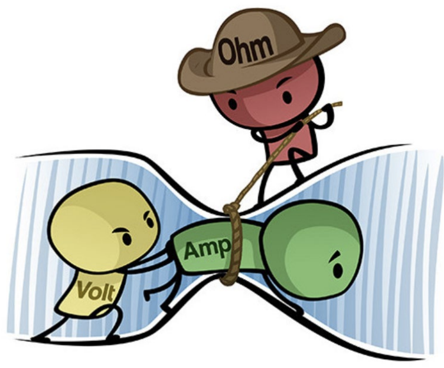
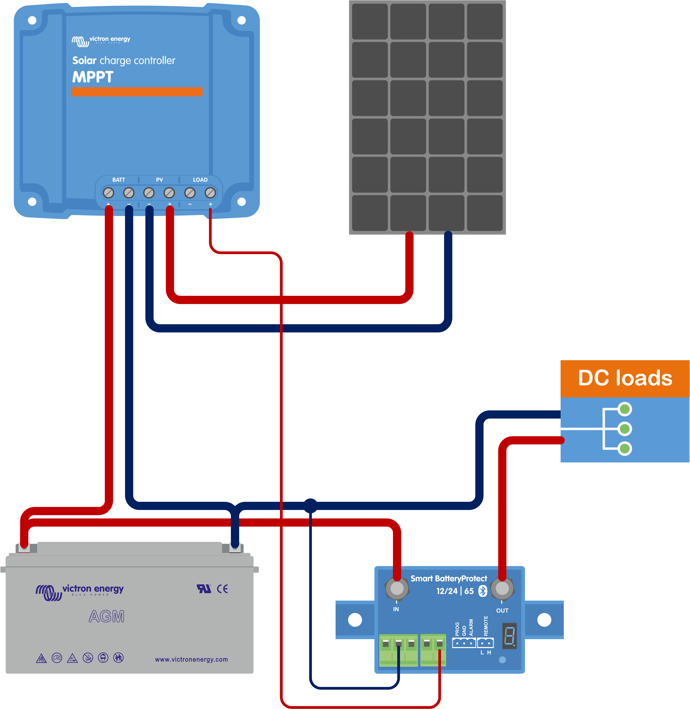
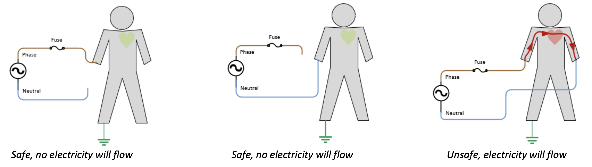
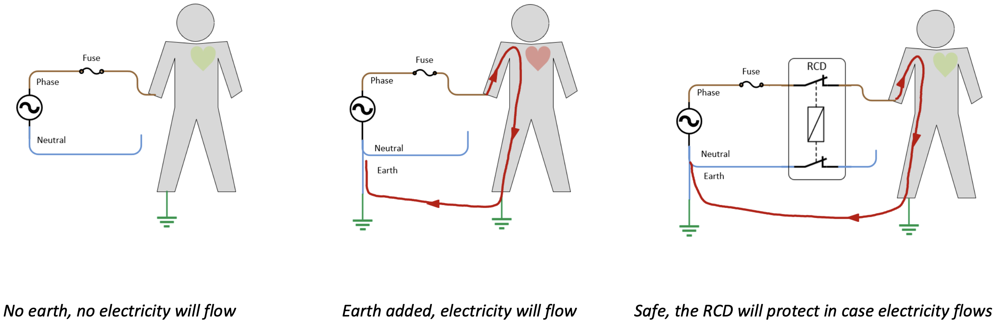

Electrics Notes

- MPTT Solar charge controller
- Smartshunt Battery Monitor
- Battery Protect
- Wire Gauge Info
- Why not ground
- Dangers of electricity
- Sources
MPPT Solar charge controller
Make all electrical connections in the following order:
- Turn off all DC loads, then connect the loads to the load output of the solar charger. Torque moment 0.75Nm.
- Confirm correct battery polarity, then connect the battery (this will allow the solar charger to recognize the system voltage). Torque moment 0.75Nm.
- Connect the VE.Direct communication cable (if applicable).
- Confirm correct PV polarity, then connect the solar array. Torque moment 0.75Nm If accidentally connected in reverse polarity, the PV voltage will drop and the controller will heat up but will not charge the battery.
- In case a MPPT WireBox is used: First: Secure all electrical cables as indicated in the WireBox installation instructions Then: Place the WireBox plastic cover over the solar charger connection area and secure it.
Smartshunt Battery Monitor
- Connect the negative battery terminal to the M10 bolt on the BATTERY MINUS side of the shunt. Note that there should be no other connections on this side of the shunt or on the negative battery terminal. Any loads or chargers connected here will be excluded from the battery state of charge calculation.
- Connect the negative of the electrical system to the M10 bolt on the SYSTEM MINUS side of the shunt. Make sure that the negative of all DC loads, inverters, battery chargers, solar chargers and other charge sources are connected “after” the shunt. Note that up until 2020, the SYSTEM MINUS connection was labelled LOAD MINUS.
- Connect the ferrule pin of the red cable with fuse to the shunt by pushing the pin into to the “Vbatt +” terminal.
- Connect the M10 terminal of the red cable with fuse to the positive terminal of the battery.
The battery monitor is now powered up. The Bluetooth LED will start blinking and Bluetooth is active.
The battery monitor needs to be configured to be fully operational,
Battery Protect
- Batt -> In -> Out -> Loads
- Connect lead to out of MPPT Load so MPPT can shut system down if needs to

Wire Gauge Info
Wire gauge chart on amperage and voltage drop
Conversion chart
| AWG # | Diameter (mm) |
Diameter (inch) |
Area |
|---|---|---|---|
| 0000 (4/0) | 11.6840mm | 0.4600" | 107.2193mm2 |
| 000 (3/0) | 10.4049mm | 0.4096" | 85.0288mm2 |
| 00 (2/0) | 9.2658mm | 0.3648" | 67.4309mm2 |
| 0 (1/0) | 8.2515mm | 0.3249" | 53.4751mm2 |
| 1 | 7.3481mm | 0.2893" | 42.4077mm2 |
| 2 | 6.5437mm | 0.2576" | 33.6308mm2 |
| 3 | 5.8273mm | 0.2294" | 26.6705mm2 |
| 4 | 5.1894mm | 0.2043" | 21.1506mm2 |
| 5 | 4.6213mm | 0.1819" | 16.7732mm2 |
| 6 | 4.1154mm | 0.1620" | 13.3018mm2 |
| 7 | 3.6649mm | 0.1443" | 10.5488mm2 |
| 8 | 3.2636mm | 0.1285" | 8.3656mm2 |
| 9 | 2.9064mm | 0.1144" | 6.6342mm2 |
| 10 | 2.5882mm | 0.1019" | 5.2612mm2 |
| 11 | 2.3048mm | 0.0907" | 4.1723mm2 |
| 12 | 2.0525mm | 0.0808" | 3.3088mm2 |
| 13 | 1.8278mm | 0.0720" | 2.6240mm2 |
| 14 | 1.6277mm | 0.0641" | 2.0809mm2 |
Why i’m not grounding my system
Not connected to ground

Connected to ground

- An RCD device will measure if any current is going to ground and cut off the circuit.
Dangers of electricity
Electricity is dangerous. It can cause harm to persons or property.
It takes a remarkably small amount of current across the human heart to stop it. Due to the natural resistance of the human skin and tissue this means that a high voltage is required to generate this heart-stopping current. But humans have died at as low as 42 Volt. Both DC and AC can cause this fatal occurrence.
| Electric Current (1 second contact) |
Physiological Effect |
| 1 mA | Threshold of feeling, tingling sensation. |
| 5 mA | Accepted as maximum harmless current |
| 10-20 mA | Beginning of sustained muscular contraction ("Can't let go" current.) |
| 100-300 mA | Ventricular fibrillation, fatal if continued. Respiratory function continues. |
| 6 A | Sustained ventricular contraction followed by normal heart rhythm. (defibrillation). Temporary respiratory paralysis and possibly burns. |
Sources
- Victron’s wiring unlimited book
- The devices’ manuals - find them linked on the diagram